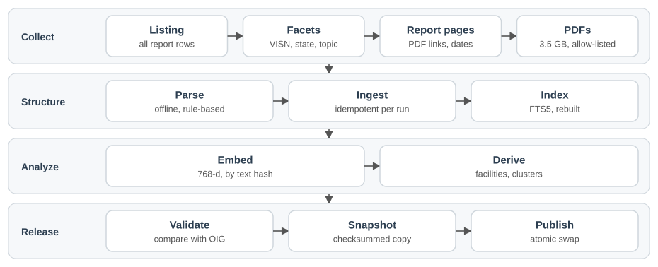

The short version
An AI assistant has the same limit, and a tighter one: it can read a few pages at a time, not thousands. We built a data service that turns OIG's public record into a structured dataset, and exposes it over the Model Context Protocol (MCP), so an assistant can answer those questions and cite the source report for each claim. It covers 4,415 reports, 15,649 recommendations, about 89,000 pages of report text, and 11,240 facility responses extracted from PDFs. The assistant reads records from this service and writes the answer from them. The service never generates findings of its own.
How it works

Collect. A crawler reads OIG's public pages and report PDFs, one request at a time, and identifies itself to the site. Everything it fetches is saved untouched, so a parsing error can be fixed and rerun without contacting OIG again.
Structure. Each recommendation becomes a record with its status, responsible office, and closure date. For inspection reports, rules (not AI) read the PDF to pull out what the facility committed to: whether it agreed, its target date, and its corrective action.
Analyze. Once per build, the service works out which facility each report belongs to, groups near-identical recommendations issued across many reports, and prepares the data for search.
Check. Each build is compared with what OIG publishes and tested for missing data. A build that fails these checks is not published. On November 4, a row-by-row comparison found the same recommendations in OIG's listing and in ours, with none missing either way, and all 14,223 closure dates agreed.
Serve. A read-only API runs on a local machine, reachable only through Cloudflare with a service token. The AI assistant connects through a separate Model Context Protocol (MCP) server. That server runs on the same machine today, and IBM Cloud is its deployment target.

Two design decisions that matter
Finding and counting are handled differently. Finding uses one search that blends two methods, because people describe problems in their own words. Counting uses only exact database queries. The same question always returns the same number, so results can be checked and repeated.
The AI never writes database queries. It can only ask for what the service offers, using set options such as a status or a date range. This closes off a common failure, where an AI writes its own query and confidently reports a wrong number.
How search works
Each search runs two methods at once. Keyword search matches the words used. Semantic search matches meaning, using an embedding model that runs locally. Both look at the recommendations and at the corrective actions facilities committed to.
The results are merged by rank, so a finding that several searches agree on rises to the top. If the semantic model is ever unavailable, search continues on keywords and the response says so.
Search specifics
One pipeline, with no modes to choose. Each method covers what the other misses, and rank fusion needs no score calibration.

| Setting | Value |
|---|---|
| Keyword search | SQLite FTS5 with BM25 ranking and porter stemming, over recommendations, corrective actions, and PDF pages |
| Embedding model | nomic-embed-text:v1.5 on a local Ollama, with task prefixes; text is capped at 2,000 characters |
| Vectors | 26,049 unit-length float32 vectors with 768 dimensions, stored in the database file, so a snapshot carries its exact index |
| Semantic search | Brute-force cosine scan in NumPy, cached in memory until the database changes. Adequate at this size |
| Candidates per list | 200 |
| Fusion | Reciprocal rank fusion, k = 60, merged on rec_id |
| Result | A shortlist of up to 100, paged, with matched_by naming the lists that found each item |
| Fallback | 5-second embedding timeout. If the model is down, the same pipeline runs on keywords, search_mode reports keyword_fallback, and /health/search reports degraded |
| Observed latency | Median of 79 to 135 ms across 10 test questions, on the host and excluding the tunnel. A small sequential sample, not a load test |
Finding and counting stay separate
Similarity has no natural cutoff, so a count built on it would depend on an arbitrary threshold. The search result's total is the shortlist size, not a count of findings. Every endpoint that counts uses exact SQL, so a query returns the same number each time and can be checked against gold answers.
Considered and left out
- Cross-encoder reranker: another service to keep up during judging. It can be added after fusion if evaluation shows ranking trouble, without changing the tool.
sqlite-vec: a native extension in the container, for no gain at this size.- A larger embedding model (
qwen3-embedding:8b): 35 minutes or more to embed, against about 2, with 19 GB held in memory. Ruled out on operating cost; its quality was not compared. - Embedding PDF pages: chunking and a much larger index, for a narrative search that keywords serve adequately so far.
Technical specifications
Stack
| Layer | Technology | Notes |
|---|---|---|
| Language | Python 3.11, uv | Locked dependencies. New releases wait two weeks before they can resolve |
| Crawling | httpx 0.28 | One request at a time, at least 1.5 seconds apart, with backoff, a host allow-list, and a stop after 10 consecutive failures |
| HTML parsing | selectolax 1.0 | Raw pages are saved, so a parser fix never needs a new crawl |
| PDF text | pypdf 6.20 with its crypto extra | All 2,214 extracted documents have a text layer, so no OCR is used |
| Response extraction | Rules, not an LLM | Deterministic and testable. Each response is checked against OIG's own text for that recommendation |
| Database | SQLite 3.46, FTS5 | One file, forward-only migrations, opened read-only for serving |
| Embeddings | Ollama, nomic-embed-text:v1.5 | Runs on the host, so no outside model sees query text |
| Vector scan | NumPy 2.4 | No separate vector database |
| API | FastAPI 0.143, uvicorn 0.54, Pydantic 2.14 | Read-only JSON. Unknown query parameters return 422, so a misspelled filter cannot return unfiltered numbers |
| Runtime | One container image, OrbStack | The same image runs the pipeline and the API, on a Mac mini |
| Access | Cloudflare Tunnel, Cloudflare Access | Outbound-only tunnel. Requests without the service token get 401 |
| MCP server | FastMCP 4, in a separate repository | Seven tools. Stdio today; streamable HTTP with a bearer token for hosting |
| Quality tooling | pytest, ruff | The suite runs offline against saved pages and two real PDFs |
Data model
| Table | Rows | Purpose |
|---|---|---|
reports | 4,415 | Keyed by site path, because vaoig.gov exposes a node id only for reports with recommendations |
recommendations | 15,649 | Keyed <node_id>-<rec_no> |
status_observations | 31,296 | Append-only, one per recommendation per run, so history accumulates |
rec_responses | 11,240 | Domain, concurrence, target date with precision, corrective action |
pdf_pages | 89,261 | Page text from 2,214 documents, with physical page numbers |
standards_cited | 23,750 | Directive, handbook, and regulation citations |
facilities | 162 | Keyed by VA station number, with 2,283 report links that each record how they were made |
inspections | 815 | Per facility, with the latest one and its next-window estimate |
clusters | 283 | Recurring recommendations, with the method and threshold of each |
text_embeddings | 26,049 | Vectors with model name and text hash, so only changed text is embedded again |
Recurring findings use two methods
| Method | Scope | How | Clusters |
|---|---|---|---|
normalized-prefix-1 | All reports | First 12 words after removing the addressee, stock openers, numbers, punctuation, and facility names; 5 or more reports | 259 |
semantic-seed-1 | Healthcare Facility Inspections | Cosine similarity of at least 0.88 to one central recommendation; 3 or more reports | 24 |
Parsing and validation results
| Check | Result | Threshold |
|---|---|---|
| Healthcare Facility Inspection reports fully parsed (90) | 100% | 100% |
| CHIP reports from 2018 on fully parsed (312) | 95.2% | 90% |
| Closed recommendations with a closure date | 94.3% | 90% |
| Reports with recommendations having a PDF | 99.3% | 90% |
| Recommendations and corrective actions with a vector | 100% | 99% |
"Fully parsed" means every recommendation has a verdict, a target, and an action. Thresholds are judgment calls informed by this one build.
API latency
| Request | Median | Slowest seen |
|---|---|---|
/v1/recommendations | 3 ms | 9 ms |
/v1/reports/{id} | 1 ms | 6 ms |
/v1/facilities/{station} | 8 ms | 12 ms |
/v1/metrics/closure | 45 ms | 50 ms |
/v1/metrics/counts | 21 ms | 32 ms |
On the host, excluding the tunnel, which added roughly 150 to 200 ms. Small sequential samples, not a load test.
What this adds beyond OIG's search
| Question | OIG website | This service |
|---|---|---|
| Find a report or filter by state, office, or status | Yes | Yes, not the reason to use this |
| Describe a problem in your own words | Keyword matching: all ten full sentences we tried found no recommendations | Matches on meaning as well as words |
| What did other facilities commit to do about this? | Read each PDF | Searchable across reports |
| Which findings recur across facilities? | Compare by hand | Grouped automatically, with how common each one is |
| Was this facility cited for this before? | Compare by hand | Listed in the facility's profile |
| Is this theme growing? | Count by hand | Counts by year |
| How long do fixes take? | Not available | Time to closure by office, topic, and finding |
| Can an AI assistant use it directly, with citations? | No API | Yes |
The main value lies in the corrective actions and the cross-report analysis. Today, that information takes hours of reading PDFs to assemble, so much of this learning across facilities does not happen.
Why an AI assistant needs this layer
OIG's website is built for a person reading one page at a time. An AI assistant with a browser can open those pages, but it cannot work effectively across them. The record is spread over thousands of web pages and PDFs, and there is no API or bulk export. Consider two ordinary questions. How long do VHA recommendations typically take to close? OIG shows a closure date on each closed recommendation, but across 223 listing pages and with no averages. What did other facilities commit to do about this finding? That answer sits inside about 2,200 PDFs, or roughly 89,000 pages. Building this dataset took about 6,100 fetches over nearly three hours, far more than an assistant can read while answering one question. In practice, we would expect it to sample a few pages and estimate, and its answer could sound just as confident.
Through MCP, the first question is one tool call that returns an exact figure, computed the same way each time, along with the data's date and how many recommendations it rests on. The work divides cleanly: the service does the collecting, counting, and matching, and the assistant does what it does well, which is interpreting those records, connecting them to the user's situation, and explaining them in plain language.
This does not make the assistant's conclusions correct by default. It means they start from complete, organized, citable evidence, and a reader can check each one against the source report.
Use cases
1. "Has OIG cited this?"
A patient safety manager notices a problem on rounds and asks in plain language: "Staff left medication carts unlocked in a hallway."
We tested this exact sentence against our own recommendation data, using three approaches:
| Approach | Result |
|---|---|
| Require every word to match | No results |
| Match any word | Led with emergency exits, hallway obstructions, and handrails |
| Blended search | Led with recommendations to secure medication carts |
| OIG's recommendation search, same sentence | No results |
The report wording is "secure medication carts when not in use," which shares few words with how the manager put it. The manager gets the relevant findings, each with its report number and link, plus what facilities committed to do where that has been extracted.
Blended search is not perfect. In our test of ten such questions, some answers were still only partly relevant, so a person should check results against the cited reports.
We also ran those ten questions through OIG's own recommendation search on November 4. All ten full sentences returned nothing. That isn't the fairest test, because people type keywords into a keyword search, so we also tried a short form of each, such as "medication carts." Eight of the ten then returned at least one recommendation, and two returned none. Results are listed newest first, and the site offers no sort by relevance. Someone who already knows the report's wording will do well on OIG's site. For someone who doesn't, or for an assistant passing along what a person said, it is much less forgiving.
This shows which searches return results, not which results are better. Our search returned five results every time, and returning something is not the same as being relevant. A blind relevance comparison is prepared but not yet scored. These questions were also written with knowledge of our own results, so they favor this service.
2. Preparing for an inspection
A manager at the VA El Paso Healthcare System asks: "Help me prepare for our next inspection." The assistant draws on several parts of the service to assemble:
- The facility's own history: prior findings, whether they closed, and any finding cited in more than one report.
- What peers were cited for: recurring findings under the current inspection program, and how common each one is across inspections.
- What peers did about it: their committed corrective actions and target dates.
- A realistic timeline: how long that kind of finding has typically taken to close.
- The likely timing: an estimated next inspection window, clearly labeled as an estimate, because OIG publishes no schedule.
The peer view is a real one: the largest recurring finding in current inspections, on developing workflows for communicating test results, appears in 21 of the 112 Healthcare Facility Inspection reports. The source material is detailed too. In El Paso's July 2026 report (25-00193-155), for example, OIG recommended that leaders maintain a clean and safe environment. The facility concurred, set a target of January 29, 2027, and described its cleaning logs, inspections, and procedures. This response exists only in the PDF. As structured data, it can sit alongside what peers committed to for the same finding.
The manager starts from an evidence-based checklist instead of a blank page.
3. Reading a trend honestly
A VISN patient safety officer asks whether test-result communication is still a problem. Counting reports with recommendations that mention test or laboratory results gives this pattern:
| Years | Reports per year |
|---|---|
| 2015 and 2016 | 32 and 27 |
| 2017 through 2024 | 2 to 11 |
| 2025 and 2026 (to date) | 21 and 28 |
The counts for 2025 and 2026 come almost entirely from the current inspection program, where recommendations about communicating test results appear in 20 of 45 Healthcare Facility Inspection reports in 2025 and 28 of 61 so far in 2026. Counts depend on the search words: this count includes "laboratory results" because the 2015 and 2016 recommendations use that wording, and a narrower search for "communicating test results" finds only 5 and 2 reports in those years.
A simple reading is that facilities improved, then slipped. The data cannot support that alone. OIG inspects against a protocol, so the rise could reflect the topic returning to that protocol as much as any change in care, and the same goes for the earlier drop. The assistant should give the counts and both readings rather than choosing one. What the counts do show is useful either way: this is a live inspection theme now, and a patient safety manager should be ready for it.
Safeguards and limits
- Every claim is traceable. Results carry a report number and link, along with the date the data was collected.
- No ratings. The service describes what OIG found and what facilities reported. It does not score facilities or individuals.
- Recurrence needs care. OIG inspects against a standard protocol, so it finds what it looks for. A repeat finding means an issue was cited again, not that nothing was done in between.
- Gaps in the source are stated. About 6 percent of closed recommendations show no closure date on OIG's site, mostly from 2013 to 2016, and OIG tagged only about a quarter of reports with a topic.
- Closure dates need care. A closure date appears to record when OIG closed a recommendation after reviewing evidence, not when the work finished. So time to closure describes OIG's process as well as the facility's, and we do not report whether facilities met their target dates.
- Partial PDF coverage. PDFs are collected for reports with recommendations. The 2,186 reports without recommendations remain listed and searchable by title, but their full text is not included.
- Not a system of record. This does not replace VA's internal tracking of OIG recommendations. It is built for learning across facilities.
- Availability. The service currently runs on a single local machine. A dated snapshot allows it to be moved to a cloud host if needed.
Where things stand
The data service is complete and live: collection, database, search, analysis, and secure hosting. Facility responses were fully extracted from all 90 Healthcare Facility Inspection reports and 95% of the 312 CHIP reports from 2018 on, and each was checked against OIG's own text for the recommendation it belongs to. Seven MCP tools are built against this API and running on the same machine, with deployment to IBM Cloud to follow. A formal evaluation comes next, scoring the assistant's answers against gold answers computed directly from the data. Accuracy figures will come from that evaluation, so none are claimed here.